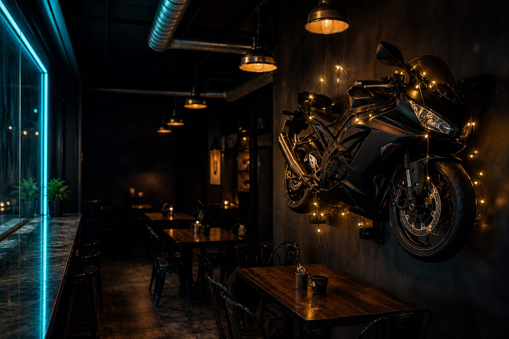
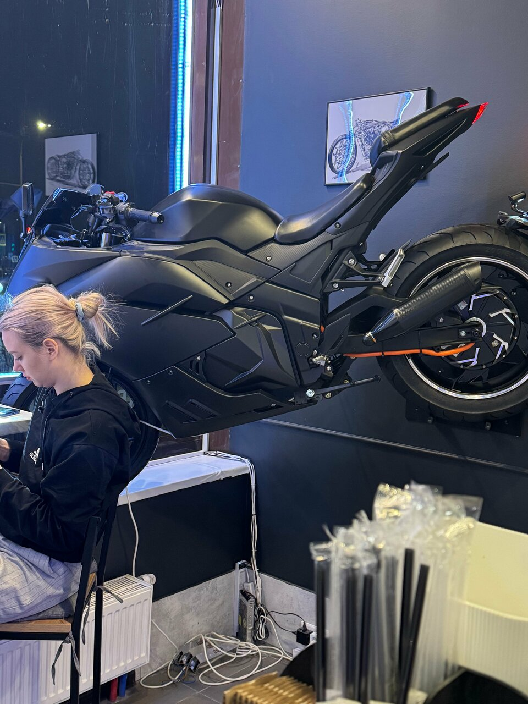
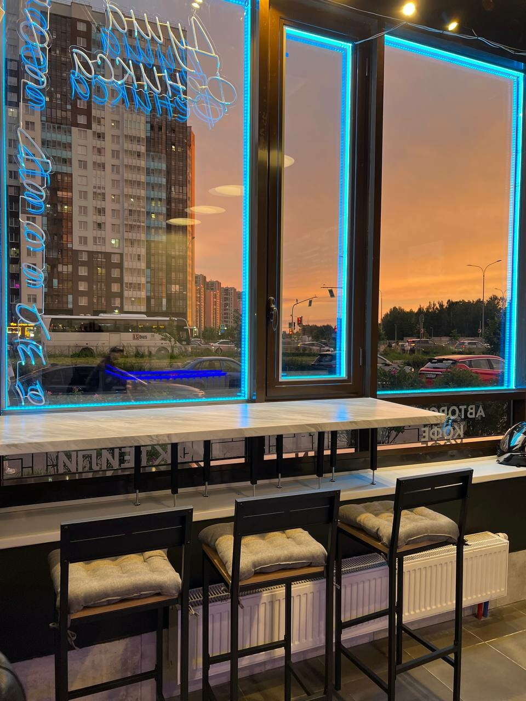
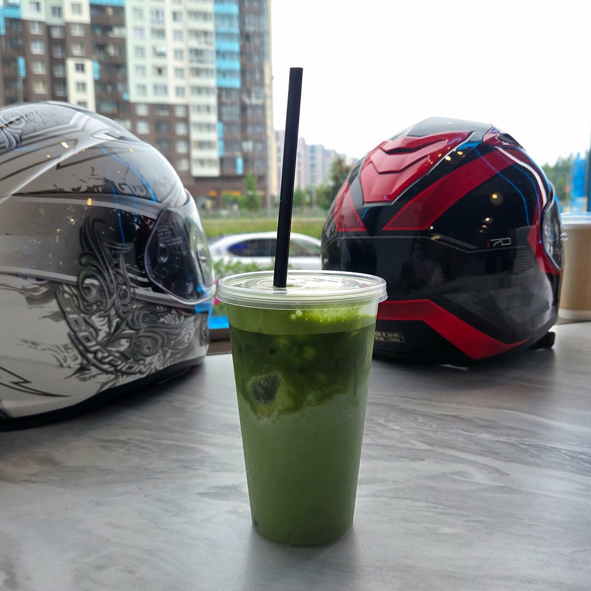
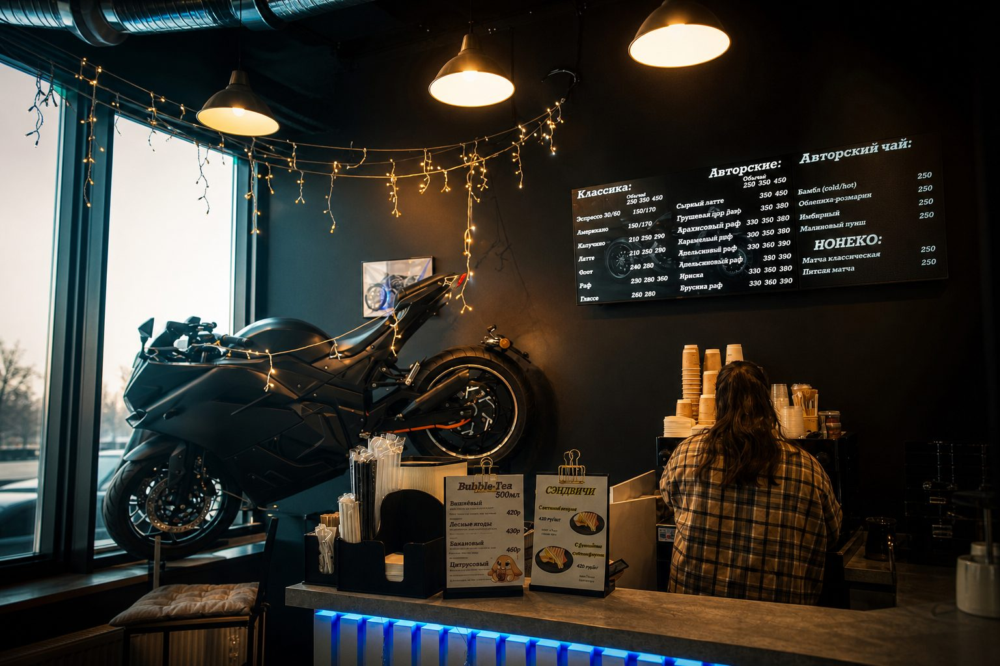
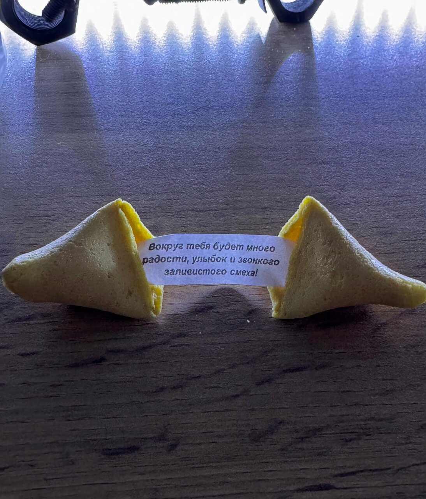
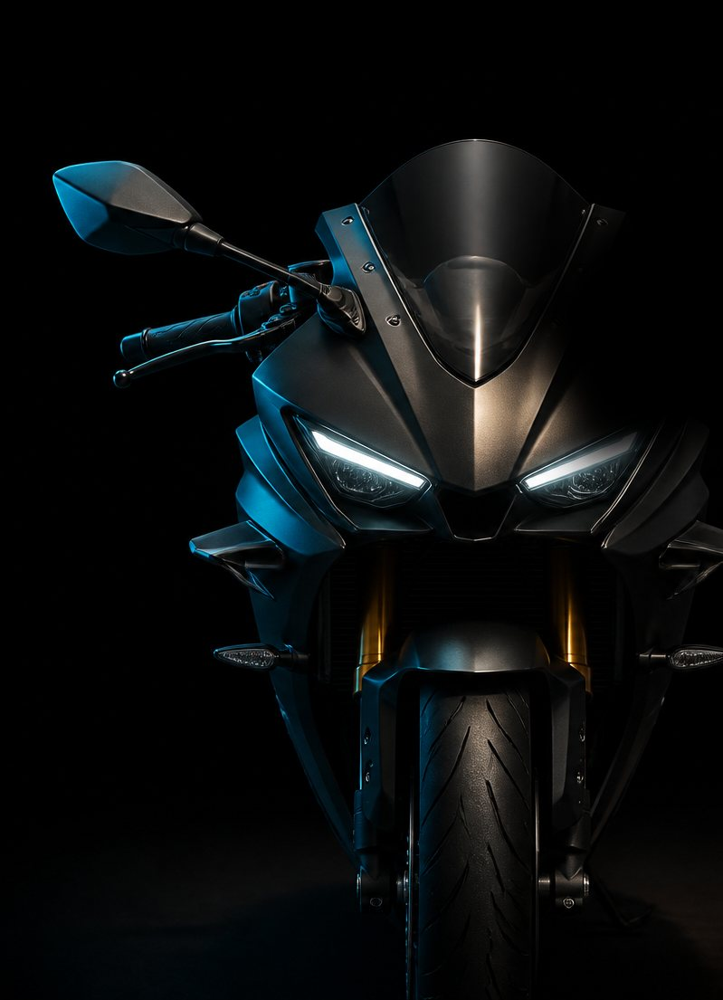

Комендантский, 71 Санкт-Петербург 5.0 · Хорошее место 2026
кофейня Душа Феникса
Зашёл случайно — остался навсегда.
Авторский кофе, настоящий мотоцикл на стене и печенька с предсказанием к каждому заказу.
01 — место
Не сетевая точка.Своё пространство.
На Комендантском есть кофейни. А есть «Душа Феникса» — маленькая, тёплая, с чёрным спортбайком на стене, гирляндами и людьми, которым правда не всё равно, что у тебя в стакане.
«Зашёл случайно — остался навсегда.»



5.0
Яндекс

байкерский вайб без понтов
Кофейня, в которую заезжают за настроением.
Тёмные стены. Тёплый свет. Неон на стойке.
Мотоцикл гости снимают чаще, чем себя.
- С собакойдаже таксы в теме
- Натуральноене химия из бутылки
- Лина и Ксенияпомнят тебя
- Печенькак каждому кофе

К каждому кофе — печенька.
Вокруг тебя будет много радости, улыбок и звонкого заливистого смеха.
02 — характер
Крутани ручку.

Настоящий мотоцикл в кофейне — не декорация «для инсты». Это про скорость, тепло и людей, которые умеют останавливаться.
На телефоне тоже работает. Соседей предупреди.
05 — живые кадры
Не стоковая эстетика. Реальные утренние и вечерние.
06 — голоса
5.0 не из воздуха.
97 отзывов на Яндексе. Напитки, персонал, атмосфера — 100% положительных.
Зашёл случайно — остался навсегда. Ламповая атмосфера, вкусный кофе и печеньки с предсказаниями. Даже четвероногие друзья в восторге.
Стильная кофейня с настоящим мотиком внутри. Атмосферно, душевно, вкусно. В такие места хочется возвращаться.
Авторский кофе, которого нет больше нигде. Девочки не мешают сиропы — они придумывают напитки. Здесь не просто кофе, а отдых для души.
Байкерский вайб, настоящий мотоцикл, уходить не хочется. Отдельная благодарность за такой уют.
Сырный латте с настоящим сыром. Не сладкий — сливочный и нежный. Печенье с предсказанием в подарок. Теперь любимое место.
Однозначно в топ-3 моих кофеен. Эспрессо крепкий, без лишней горечи, латте — сказка. Теперь стандартный пункт по утрам.
Завлекла стилистика мото — по итогу обрела тут классных друзей. Кофе и еда отменные, но возвращаюсь ещё и поболтать.
Жалею, что не зашла раньше. Кофе поднимает настроение на весь день и почти отбивает желание возвращаться в Москву.
07 — маршрут
открыто до 22:00Комендантский
проспект, 71
Приморский район. Ищи неоновую вывеску — 290 метров от остановки «Арцеуловская аллея».